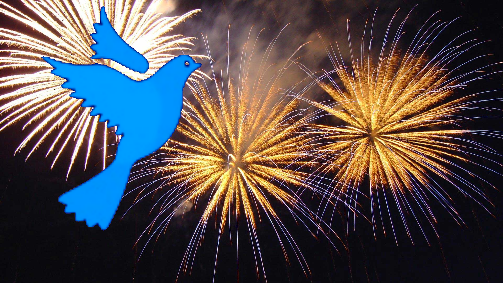

Сегодня исполняется год как наша страна появилась.
В связи с этим Президент НРА поздравил всех:
"Уважаемые друзья!
Поздравляю вас с Днём Агарии!
С нашим национальным праздником, который напрямую связан с историческим выбором нашего народа.
Напомню, что тогда, 1 год назад, очень многое в нашей стране происходило впервые.
Агария впервые во весь голос заявила о приверженности принципам демократии, о приоритете прав человека и гражданина, о признании права за каждым на свободное развитие, неотъемлемого права на достойную жизнь.
Именно ради этого в новой Агарии началось строительство демократического правового государства.
Сегодня мы можем с уверенностью сказать, что за эти годы коренным образом не только изменился общественный строй, экономика, уклад жизни наших людей.
Самое главное, что мы окрепли как страна и как единая нация.
А наша убеждённость в необходимости свободного, демократического развития помогает нам и сегодня обновлять нашу жизнь, строить современное и прогрессивное общество.
Общество, которое должно быть привлекательным для работы и творчества. Самое главное – оно должно быть комфортным для людей, для создания семьи и воспитания новых поколений.
За 1 год в Агарии появилось достаточное количество новых традиций, которые, собственно, и отличают нашу страну, как любое современное государство.
1 год назад наша страна выбрала новый путь.
И все мы несём ответственность за те решения, которые принимались, за тот выбор в конечном счёте за нашу страну и за её будущее.
Я ещё раз всех сердечно поздравляю с праздником.
Поздравляю в этом особом для нашей страны месте.
Это символы нашего государства, символы его духовной мощи и, я уверен, его блестящего будущего.
Поздравляю всех ещё раз с Днём Агарии!"